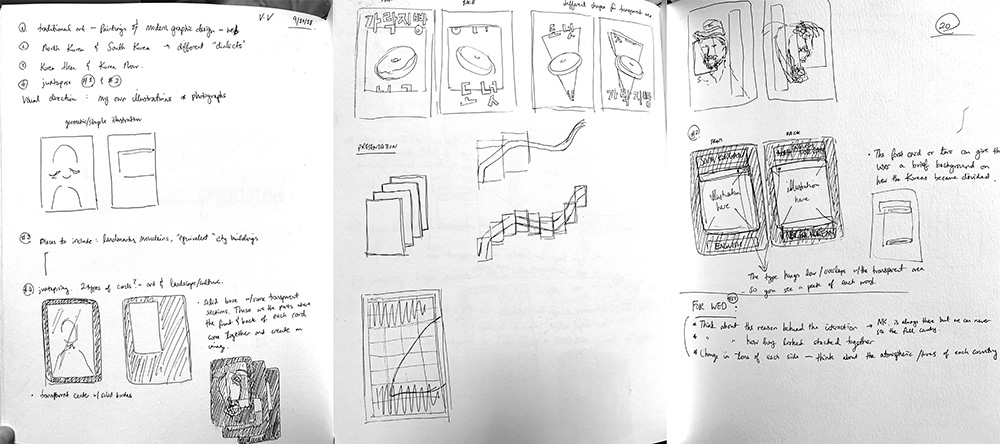
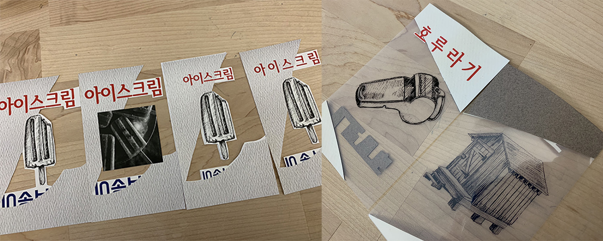
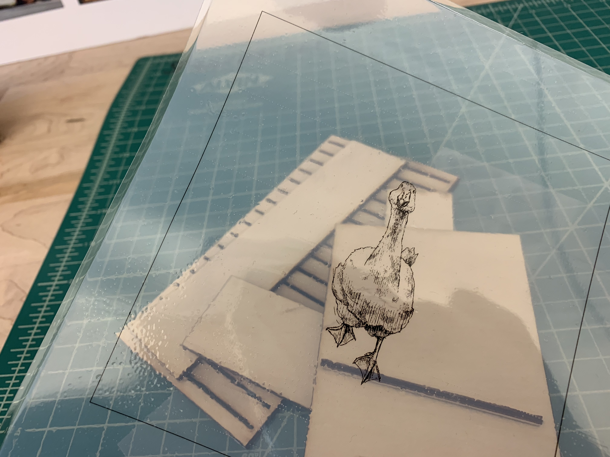
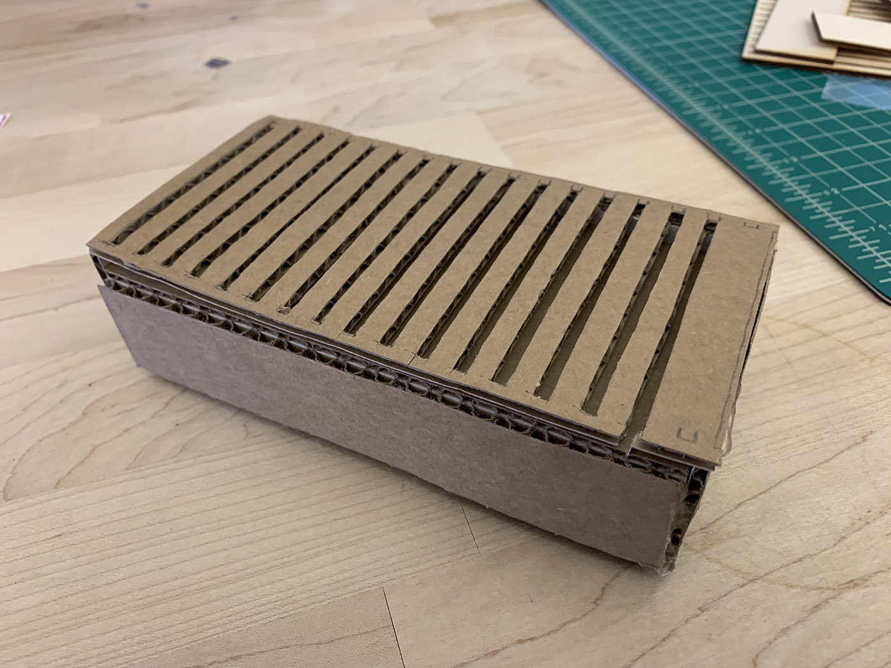

North and South
2018
This set of word cards depict the disparaties between the Korean language in North Korea and South Korea. During the process of my own personal research, I discovered that my interest in languages and Korean history stood out more than I had thought. So I thought: Why not combine the two?
The Korean alphabet, Hangul (한글), was invented by Sejong the Great in the 15th century. This was a crucial moment for Korea because the easy accessibility of Hangul greatly contributed to the heightening of peasant literacy throughout history. On August 15, 1945, the Korean Peninsula finally gained independence after 35 years of Imperial Japanese rule. This was the start of the division of the Korean Peninsula — the one that severly separates the two Koreas to this day. Since the separation, the two Korean languages, especially grammar and vocabulary, have evolved in drastically different ways.
PROCESS
From Concept to Form
During the discovery stage of my process, I focused on solidifying my concept through the transparent windows on each card. These were crucial to the form of the cards since they represented how both Koreas are always aware of each other's presence, yet never really get to fully experience each other's culture. Once laid out altogether, the windows create the shape of the 38th parallel that divides North and South Korea.

Protyping, Again and Again
The biggest obstacle in the production stage was figuring out the best use of transparency in my card. I knew I couldn’t run any transparencies through the laser printer, so I used transparent films to print with an inkjet printer. After getting the illustrations printed out, the question was: How to give weight and sturdiness to the transparent core of the cards so that they can stand in the slots I make?

I tried a couple of different approach to this problem. First, I tried laminating the transparencies—although this approach gave each card the sturdiness I had hoped for, the lamination process left some bubbles within the material that they looked unprofessional. The second approach was to put the printed out illustrations in between two sheets of acetate. This was the final direction I chose because it gave the cards both sturdiness and a professional look.


The key elements in differentiating the North Korean language and the South Korean language in my cards for non-Korean-speaking audience were the materials used, as well as the typefaces chosen for each side of the cards. In manufacturing the physical product, the iterative process was very helpful for me in really refining how I take the most advantage of my materials, especially with the transparencies. It was also very helpful in the making of my box, because it allowed me to really consider the meticulous details of each piece that builds the whole.
Adobe Illustrator and Adobe InDesign were used to create this project.